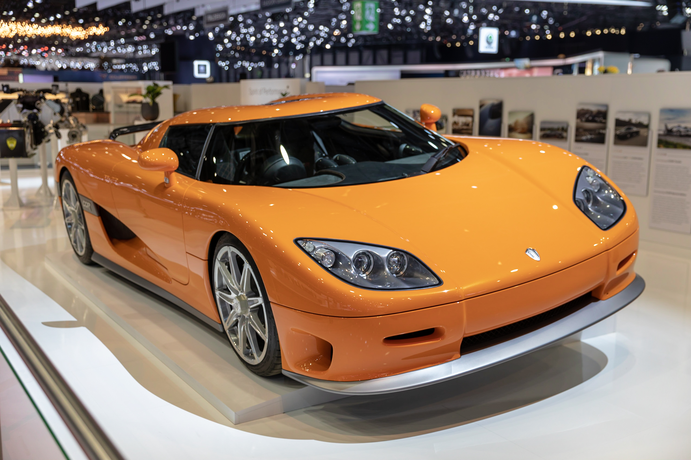

Köenigsegg, a brief history
List of Köenigsegg records
- Most powerful production car, The Köenigsegg CCR broke the record by 150hp with a output of 806hp.
- Worlds fastest car, The Köenigsegg CCR broke this record beating the mclaren F1's previous record of 386.4 KMPH by
1.5KMPH.
- Top Gear test track record, highest speed recorded on the top gear test track of the time at 196mph.
- fastest 0-300-0 KM/H, The Köenigsegg CCX accelerated from 0 to 300 KM/H and back to 0 KM/H in 29.2 seconds.
- Agera R 0-300-0 record, The Agera R took Köenigseggs record by completing a 0-300-0 run in 21.19 seconds.
- One:1 0-300-0 Once again Köenigsegg broke their own record by completing a run in 17.95 seconds.
- Agera RS Highest top speed, The Agera RS reached a top speed of 447.19 KM/H, on the same day they also broke the 0-400-0 record
taking only 33.29 seconds.
- Regera 0-400-0 record, Köenigsegg broke their own record once again by completing a 0-400-0 KM/H run in 31.49 seconds.
- Regera 0-400-0 record, The Köenigsegg Regera took back its own title with a 0-400-0 KM/H run of 28.81 seconds.
Köenigsegg CCR
